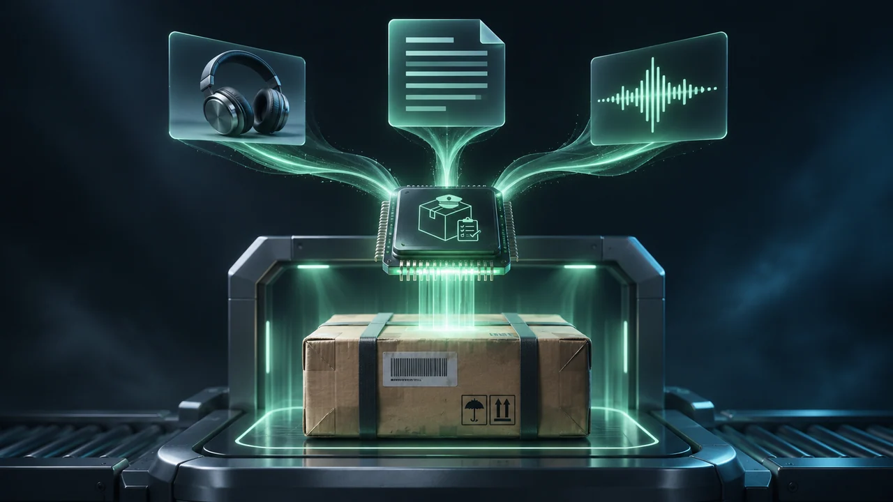
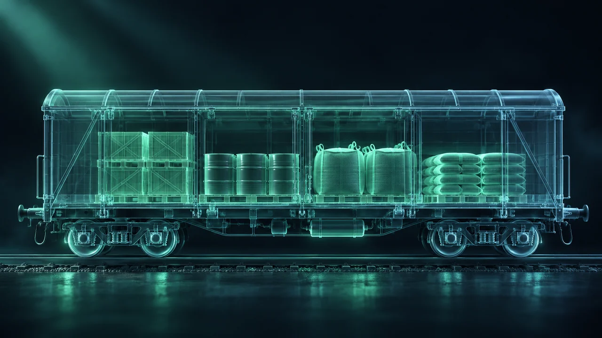
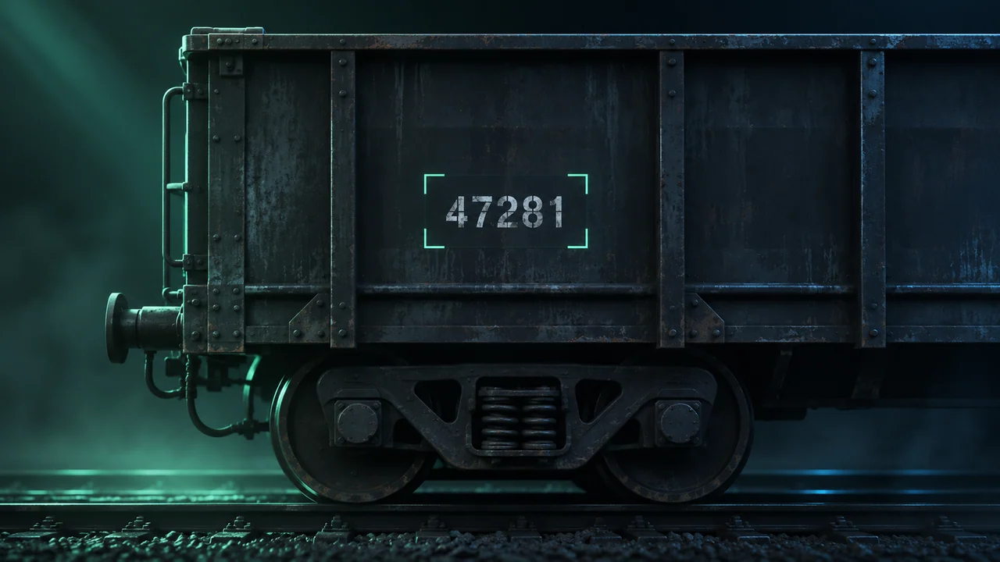
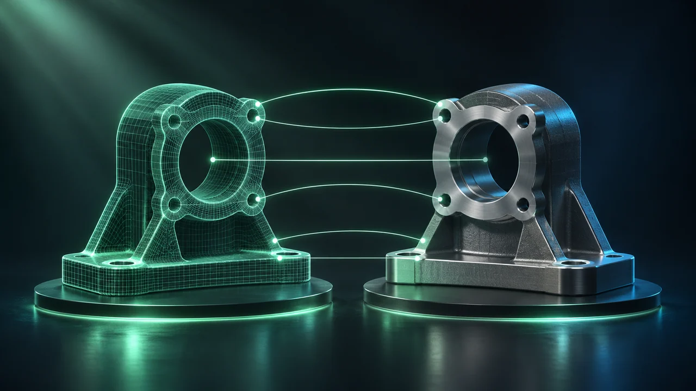

NOTARIF
Multimodal AI for preliminary 10-digit commodity classification from text, images and voice, with tariff and non-tariff information.
Bobur Tukhtamurodov
I build AI applications, computer vision systems and secure local inference infrastructure. My work connects software engineering with real customs challenges.
I work at the intersection of artificial intelligence, enterprise software and government digital transformation. My focus is turning advanced models into dependable systems that solve operational challenges.
As a Chief Inspector at the Customs Committee of the Republic of Uzbekistan, I contribute to AI engineering initiatives spanning multimodal services, computer vision, local LLM infrastructure and secure deployment.
Selected public-facing work and high-level engineering areas. Sensitive implementation details are intentionally excluded.

Multimodal AI for preliminary 10-digit commodity classification from text, images and voice, with tariff and non-tariff information.
A multilingual, real-time voice AI robot helping international airport passengers understand customs procedures.

Research into vision-based cargo occupancy assessment and consistency checks between scan findings and declared goods.
Engineering locally hosted language model serving, retrieval pipelines and GPU-backed inference for controlled environments.
AI-assisted analysis of goods information to support customs valuation.
Reading document text with OCR and analysing extracted information for further processing.

Detecting and reading railway wagon numbers from images for identification workflows.
A multilingual chatbot that answers questions using national legislation.

Comparing goods images to assess whether an item matches a reference image.
Combining sparse keyword retrieval and dense semantic retrieval in hybrid search workflows.
Face detection and recognition through visual feature comparison.
Hands-on disciplines spanning model integration, retrieval, vision, production systems and responsible AI deployment.
Model serving, prompt systems, optimisation and applied language intelligence.
Retrieval pipelines, semantic search, domain-aware responses and structured data.
Visual recognition, classification, image analysis and real-world evaluation.
Python services, APIs, GPU inference, infrastructure reliability and data control.
Hands-on experience with containerised AI services, vector search, storage, caching and NVIDIA GPU inference.
Model serving, GPU inference, retrieval pipelines and deployment across workstations and H200 / B200 clusters.
From application interfaces to AI services and local infrastructure.
Developed a browser focused on local operation and security.
In sensitive environments, a strong AI system is more than its benchmark score. It also needs reliability, governance and thoughtful integration.
Customs Committee of the Republic of Uzbekistan
AI integration, multimodal systems, computer vision and secure enterprise deployment.Uzbekistan Customs
Experience in process automation, software systems and data-driven operations.Higher education
Education listed on LinkedIn profile.Selected professional development credentials relevant to AI, government innovation and customs operations.
UAE–Uzbekistan joint initiative · Certificate of Completion
Ministry of Digital Technologies of Uzbekistan
Building Trust, Skills and an Innovative Culture · Ministry of Digital Technologies
WCO CLiKC! · World Customs Organization